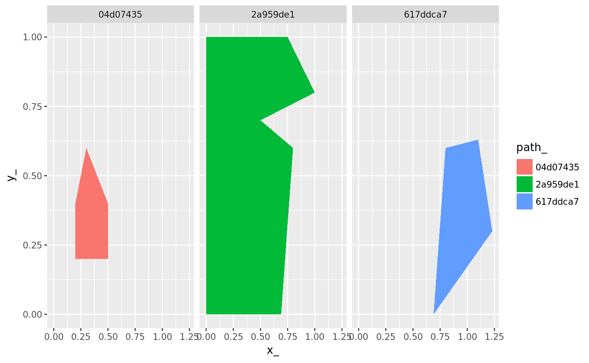

Build a map of triangles to paths (polygon ring)
path_triangle_map(x, RTri)
| x | PATH object |
|---|---|
| RTri | RTriangle triangulation |
data frame mapping triangles to their containing paths
data("minimal_mesh", package = "silicate") p <- silicate::PATH(minimal_mesh) tr <- edge_RTriangle(p) path_triangle_map(p, tr)#> # A tibble: 20 x 2 #> path_ triangle_idx #> <chr> <int> #> 1 46a17109 1 #> 2 46a17109 2 #> 3 46a17109 3 #> 4 46a17109 4 #> 5 46a17109 5 #> 6 46a17109 6 #> 7 46a17109 7 #> 8 46a17109 8 #> 9 46a17109 9 #> 10 46a17109 10 #> 11 46a17109 11 #> 12 46a17109 14 #> 13 46a17109 15 #> 14 46a17109 16 #> 15 46a17109 17 #> 16 1df9f691 3 #> 17 1df9f691 8 #> 18 1df9f691 9 #> 19 7db01220 12 #> 20 7db01220 13library(ggplot2) library(dplyr) library(purrr) ggplot(path_triangle_map(p, tr) %>% inner_join(reduce(p[c("path", "path_link_vertex", "vertex")], inner_join))) + geom_polygon(aes(x_, y_, fill = path_)) + facet_wrap(~path_)#>#>#>